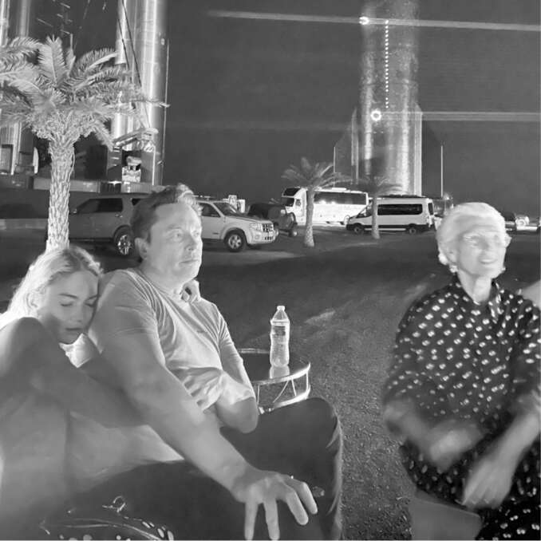
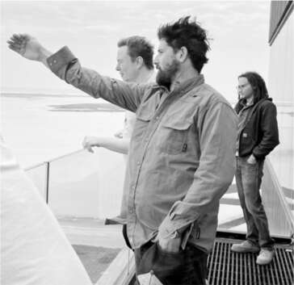
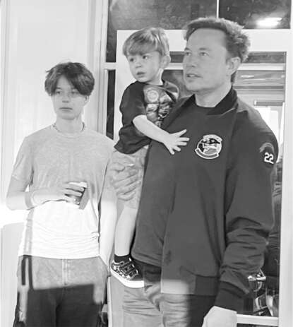
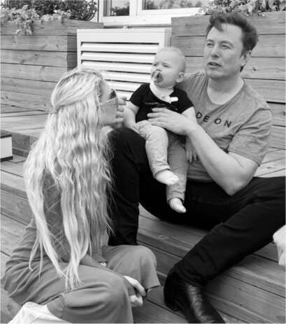

95 Sự Kiện Phóng Starship Spacex,
Công việc đầy rủi ro
"Dạ dày tôi thắt lại," Musk nói với Mark Juncosa khi họ đứng trên ban công trên đỉnh tòa nhà lắp ráp cao 81 mét tại Starbase. "Nó luôn xảy ra trước một vụ phóng lớn. Tôi bị rối loạn căng thẳng hậu sang chấn từ những lần thất bại trên Kwaj."
Tháng 4 năm 2023, thời điểm thử nghiệm phóng Starship đã đến. Khi tới miền nam Texas, Musk làm điều ông thường làm trước mỗi lần phóng tên lửa lớn, kể cả lần đầu 17 năm trước: ông đắm chìm vào tương lai. Ông liên tục chia sẻ với Juncosa những ý tưởng và chỉ thị về việc thay thế bốn lều lắp ráp khổng lồ bằng một nhà máy đồ sộ có thể sản xuất hơn một tên lửa mỗi tháng. Họ nên bắt đầu xây dựng nhà máy ngay lập tức, cùng với một khu nhà ở mái năng lượng mặt trời mới cho công nhân. Chế tạo một tên lửa như Starship rất khó, nhưng ông biết rằng bước quan trọng hơn là sản xuất hàng loạt. Cuối cùng sẽ cần một hạm đội gồm hàng nghìn chiếc để duy trì một thuộc địa của con người trên Sao Hỏa. "Mối quan tâm lớn nhất của tôi là quỹ đạo của chúng ta. Liệu chúng ta có đang đi đúng hướng để đến Sao Hỏa trước khi nền văn minh sụp đổ không?"
Khi các kỹ sư khác tham gia cùng họ trong cuộc họp đánh giá trước khi phóng kéo dài ba giờ trong phòng hội nghị trên tầng cao, Musk đã có một bài phát biểu khích lệ. "Hãy nhớ rằng khi bạn trải qua tất cả những khó khăn, thứ bạn đang làm việc là thứ tuyệt vời nhất trên Trái đất. Hơn rất nhiều. Thứ tuyệt vời thứ hai là gì? Cái này tuyệt vời hơn bất cứ thứ gì xếp thứ hai."
Cuộc nói chuyện sau đó chuyển sang chủ đề rủi ro. Hàng tá cơ quan quản lý phải phê duyệt chuyến bay thử nghiệm không chia sẻ niềm đam mê của Musk. Các kỹ sư đã báo cáo cho ông về tất cả các đánh giá và yêu cầu an toàn mà họ đã trải qua. "Việc xin giấy phép thật sự rất mệt mỏi", Juncosa nói. Shana Diez và Jake McKenzie cung cấp thêm chi tiết. "Đầu tôi đau quá", Musk nói, ôm đầu. "Tôi đang cố gắng tìm ra cách đưa nhân loại lên Sao Hỏa với tất cả những thứ vớ vẩn này."
Ông im lặng suy nghĩ trong hai phút, và khi thoát khỏi trạng thái trầm tư, ông trở nên triết lý. "Đây là cách các nền văn minh suy tàn. Họ ngừng chấp nhận rủi ro. Và khi họ ngừng chấp nhận rủi ro, các mạch máu của họ cứng lại. Mỗi năm có nhiều người giám sát và ít người làm việc hơn." Đó là lý do tại sao Mỹ không còn thể xây dựng những thứ như đường sắt cao tốc hoặc tên lửa lên mặt trăng. "Khi bạn thành công quá lâu, bạn sẽ mất đi khát khao chấp nhận rủi ro."
"Một ngày tuyệt vời"
Vụ phóng vào thứ Hai đó đã bị hủy bỏ khi còn 40 giây do sự cố van, và việc phóng được lên lịch lại sau ba ngày, vào ngày 20 tháng 4. Liệu ngày 4/20 có phải là cố ý, một lần nữa nhắc đến meme hút cần 420, tương tự như lời đề nghị 420 đô la của ông để tư nhân hóa Tesla và lời đề nghị 54,20 đô la để mua Twitter? Trên thực tế, nó chủ yếu dựa trên dự báo thời tiết và sự sẵn sàng, nhưng nó làm Musk thích thú, người đã nói trong nhiều tuần rằng ngày 4/20 là "định mệnh". Nhà làm phim Jonah Nolan, người đang ghi lại sứ mệnh này, có một câu châm ngôn rằng kết quả trớ trêu nhất là kết quả có khả năng xảy ra nhất. Musk đã thêm hệ quả của mình: "Kết quả thú vị nhất là kết quả có khả năng xảy ra nhất."
Musk đã bay tới Miami sau lần đếm ngược đầu tiên bị hủy bỏ để phát biểu tại một hội nghị quảng cáo và trấn an họ về kế hoạch của mình cho Twitter. Ông trở lại Boca Chica ngay sau nửa đêm ngày 20 tháng 4, ngủ ba tiếng, sau đó uống Red Bull và đến phòng điều khiển lúc 4:30 sáng, bốn giờ trước giờ phóng dự kiến. Bốn mươi kỹ sư và nhân viên điều hành bay, nhiều người mặc áo phông "Chiếm Sao Hỏa!", ngồi thành hàng ở các bảng điều khiển trong một tòa nhà chắn nhiệt, nhìn ra vùng đất ngập nước đến bệ phóng cách đó sáu dặm. Lúc bình minh, Grimes đến cùng X, Y và cậu con trai mới sinh của họ, Techno Mechanicus, được gọi là Tau.
Ba mươi phút trước giờ phóng dự kiến, Juncosa ra ngoài boong tàu và báo cáo với Musk về một vấn đề được phát hiện bởi một trong các cảm biến. Musk suy nghĩ vài giây rồi tuyên bố: "Tôi không nghĩ đó là rủi ro thực sự." Juncosa nhảy cẫng lên, nói "Tuyệt vời!", và chạy vội vào phòng điều khiển. Musk cũng nhanh chóng theo sau và ngồi vào bàn điều khiển hàng ghế đầu, huýt sáo giai điệu "Ode to Joy" của Beethoven.
Sau một khoảng dừng ngắn ở thời điểm T-40 giây để đánh giá cuối cùng, Musk gật đầu và quá trình đếm ngược tiếp tục. Khi đánh lửa, ngọn lửa từ ba mươi ba động cơ Raptor của tầng đẩy có thể được nhìn thấy từ cửa sổ phòng điều khiển và trên hàng chục màn hình. Tên lửa bay lên rất chậm. "Chúa ơi, nó đang bay lên!", Musk hét lên, rồi nhảy khỏi ghế và chạy ra boong tàu kịp lúc nghe thấy tiếng nổ ầm ầm từ vụ phóng. Trong hơn ba phút, tên lửa bay lên không trung và khuất dần khỏi tầm mắt.
Nhưng khi Musk quay trở lại bên trong, rõ ràng trên màn hình là tên lửa đang chao đảo. Hai động cơ đã khởi động không tốt trong vài giây trước khi phóng, và một lệnh đã được gửi để tắt chúng. Điều đó khiến tầng đẩy còn lại ba mươi mốt động cơ, đủ để hoàn thành nhiệm vụ. Nhưng ba mươi giây sau khi bay, hai động cơ nữa ở rìa tầng đẩy đã phát nổ do nhiên liệu rò rỉ từ một van mở, và đám cháy bắt đầu lan sang các khoang động cơ liền kề. Tên lửa vẫn tiếp tục bay lên, nhưng rõ ràng là nó sẽ không thể vào quỹ đạo. Quy trình yêu cầu họ phải cho nó nổ trên mặt nước, nơi nó sẽ không gây nguy hiểm. Musk gật đầu với giám đốc phóng, người đã gửi "tín hiệu phá hủy" đến tên lửa ba phút mười giây sau khi bay. Bốn mươi tám giây sau, nguồn cấp video từ tên lửa bị mất tín hiệu, giống như những gì đã xảy ra trong ba lần phóng đầu tiên từ Kwaj. Một lần nữa, nhóm nghiên cứu lại phải dùng cụm từ hơi mỉa mai "tháo rời nhanh ngoài dự kiến" để mô tả những gì đã xảy ra.
Khi xem lại vidéo về vụ phóng, rõ ràng là luồng khí từ động cơ Raptor đã phá hủy chân bệ phóng, bắn những mảnh bê tông khổng lồ lên không trung. Một số động cơ có thể đã bị va chạm bởi các mảnh vỡ.
Như thường lệ, Musk sẵn sàng chấp nhận một số rủi ro. Khi xây dựng bệ phóng vào năm 2020, ông đã quyết định không đào rãnh dẫn lửa bên dưới bệ phóng, giống như hầu hết các bệ phóng khác, để chuyển hướng luồng khí từ động cơ. "Đây có thể là một sai lầm", ông đã nói như vậy vào thời điểm đó. Ngoài ra, vào đầu năm 2023, nhóm bệ phóng đã bắt đầu chế tạo một tấm thép lớn đặt trên nền móng của bệ phóng và được làm mát bằng nước phun. Nhưng nó hóa ra lại chưa sẵn sàng vào thời điểm phóng, và Musk đã tính toán, dựa trên dữ liệu từ các thử nghiệm bắn tĩnh, rằng bê tông mật độ cao sẽ chịu được.
Giống như quyết định bỏ qua vách ngăn chống sóng trên phiên bản đầu tiên của Falcon 1, việc chấp nhận những rủi ro này hóa ra là một sai lầm. NASA hay Boeing, với cách tiếp cận an toàn của họ, khó có thể đưa ra những quyết định như vậy. Nhưng Musk tin vào phương pháp thử nghiệm nhanh để chế tạo tên lửa. Chấp nhận rủi ro. Học hỏi từ những vụ nổ. Điều chỉnh. Lặp lại. "Chúng tôi không muốn thiết kế để loại bỏ mọi rủi ro", ông nói. "Nếu không, chúng ta sẽ không bao giờ đạt được bất cứ điều gì."
Ông ấy đã tuyên bố trước đó rằng vụ phóng thử nghiệm sẽ được coi là thành công nếu tên lửa rời khỏi bệ phóng, bay đủ cao để nổ ngoài tầm mắt và cung cấp nhiều thông tin, dữ liệu hữu ích. Những mục tiêu đó đã đạt được. Tuy nhiên, tên lửa vẫn phát nổ. Phần lớn công chúng xem đây là một thất bại thảm hại. Và trong giây lát, khi nhìn chằm chằm vào màn hình, Musk có vẻ chán nản.
Nhưng những người còn lại trong phòng điều khiển bắt đầu vỗ tay. Họ hân hoan với những gì đã đạt được và những gì đã học được. Cuối cùng Musk đứng dậy, giơ tay lên đầu và quay sang mọi người. "Làm tốt lắm," ông nói. "Thành công. Mục tiêu của chúng ta là rời bệ phóng và nổ ngoài tầm mắt, và chúng ta đã làm được. Có quá nhiều thứ có thể sai sót để đạt được quỹ đạo ngay lần đầu tiên. Đây là một ngày tuyệt vời."
Tối hôm đó, khoảng một trăm nhân viên SpaceX và bạn bè đã tụ tập tại Tiki Bar ở Starbase cho một bữa tiệc bán chính thức với món heo sữa quay chậm và khiêu vũ. Phía sau sân khấu là một số Starship cũ hơn, lớp vỏ thép không gỉ phản chiếu ánh đèn từ bữa tiệc, cùng với sao Hỏa, sáng và đỏ, mọc lên như được sắp đặt trên bầu trời đêm ngay phía trên chúng.
Ở một góc bãi cỏ, Gwynne Shotwell nói chuyện với Hans Koenigsmann, nhân viên thứ tư của SpaceX, người đã đưa bà gặp Musk hai mươi mốt năm trước. Koenigsmann, một cựu chiến binh của các vụ phóng Kwaj, đã tự mình bay đến miền nam Texas để xem vụ phóng này với tư cách khán giả. Ông đã không gặp Musk kể từ vụ phóng Inspiration4 năm 2021, khi ông đang dần rời khỏi công ty. Ông ấy đã nghĩ đến việc lại gần chào hỏi nhưng quyết định không làm vậy. "Elon không phải là người thích nhìn lại và đa cảm," ông nói. "Anh ấy không giỏi trong việc đồng cảm kiểu đó."
Musk và Grimes ngồi ở một trong những chiếc bàn dã ngoại cùng mẹ của anh, Maye, người đã đến muộn vào đêm hôm trước sau khi tổ chức sinh nhật lần thứ bảy mươi lăm ở New York. Bà hồi tưởng về việc cha mẹ bà đã đưa gia đình đi khám phá sa mạc Kalahari của Nam Phi hàng năm khi bà còn nhỏ. Elon giống họ, bà nói, một thế hệ những người ưa mạo hiểm truyền lại đặc điểm đó cho thế hệ tiếp theo.
X đi lang thang đến một trong những hố lửa, và khi Musk nhẹ nhàng cố gắng kéo cậu bé đi, cậu bé vùng vẫy và kêu ré lên, không vui khi bị kiềm chế. Vì vậy, Musk để cậu bé đi. "Một ngày nọ khi tôi còn nhỏ, bố mẹ tôi đã cảnh báo tôi không được nghịch lửa," ông nhớ lại. "Vì vậy, tôi đã lấy một hộp diêm ra sau gốc cây và bắt đầu châm lửa."
"Được đúc kết từ những sai lầm"
Vụ nổ Starship là biểu tượng của Musk, một phép ẩn dụ phù hợp cho sự thôi thúc của ông ấy là nhắm mục tiêu cao, hành động bốc đồng, chấp nhận rủi ro lớn và đạt được những điều đáng kinh ngạc—nhưng cũng để phá hủy mọi thứ và để lại đống đổ nát âm ỉ trong sự thức tỉnh của mình trong khi cười khoái trá. Cuộc đời ông từ lâu đã là sự pha trộn của những thành tựu thay đổi lịch sử cùng với những thất bại thảm hại, những lời hứa suông và những thôi thúc kiêu ngạo. Cả thành công và thất bại của ông đều rất lớn. Điều đó khiến ông được người hâm mộ tôn sùng và bị các nhà phê bình chỉ trích, mỗi bên đều thể hiện sự cuồng nhiệt của Thời đại Twitter siêu phân cực.
Được thúc đẩy từ thời thơ ấu bởi những con quỷ và những thôi thúc anh hùng, ông đã khuấy động những tranh cãi bằng cách đưa ra những tuyên bố chính trị mang tính kích động và gây ra những cuộc chiến không cần thiết. Hoàn toàn bị ám ảnh đôi khi, ông thường xuyên tự đẩy mình đến giới hạn Kármán của sự điên rồ, ranh giới mờ ảo ngăn cách tầm nhìn với ảo giác. Cuộc sống của ông có quá ít thiết bị chuyển hướng ngọn lửa.
Về những mặt này, vụ phóng đã là một phần của một tuần điển hình, một tuần tràn ngập sự sẵn sàng chấp nhận loại rủi ro hiếm khi xảy ra trong các ngành công nghiệp trưởng thành hoặc bởi các CEO trưởng thành.
- Trong cuộc họp báo cáo kết quả kinh doanh của Tesla tuần đó, ông đã quyết tâm theo đuổi chiến lược giảm giá để tăng doanh số bán hàng, và một lần nữa, như mọi năm kể từ 2016, ông dự đoán rằng hệ thống lái tự động hoàn toàn (Full Self-Driving) sẽ sẵn sàng trong vòng một năm.
- Tại hội nghị quảng cáo ở Miami tuần đó, Linda Yaccarino, giám đốc quảng cáo của NBC Universal, người phỏng vấn ông trên sân khấu, đã đưa ra một đề xuất riêng tư bất ngờ: bà có thể là người mà ông đang tìm kiếm để điều hành Twitter. Họ chưa từng gặp nhau trước đây, nhưng kể từ khi ông mua lại Twitter, bà đã liên tục liên lạc qua tin nhắn và điện thoại để thuyết phục ông đến hội nghị. "Chúng tôi có chung tầm nhìn về tương lai của Twitter, và tôi muốn giúp ông ấy, điều này đã dẫn đến việc tôi 'bám riết' để được phỏng vấn ông ấy ở Miami", bà chia sẻ. Bà đã sắp xếp một bữa tối cho ông với hàng chục nhà quảng cáo hàng đầu, và ông đã ở lại đó bốn tiếng đồng hồ. Ông nhận ra rằng bà có thể là một sự lựa chọn hoàn hảo; bà rất thông minh, nhiệt huyết với công việc, am hiểu về doanh thu quảng cáo và đăng ký, và có sự thẳng thắn, gần gũi cần thiết để dung hòa các mối quan hệ, giống như Gwynne Shotwell đã làm tại SpaceX. Nhưng ông không muốn nhường quá nhiều quyền kiểm soát. "Tôi vẫn sẽ phải làm việc tại Twitter", ông nói với bà, một cách nói lịch sự rằng ông vẫn sẽ chịu trách nhiệm. Bà nói với ông hãy nghĩ về nó như một cuộc chạy tiếp sức. "Ông xây dựng sản phẩm, ông chuyển gậy cho tôi, và tôi thực hiện và bán nó." Cuối cùng, ông đã đề nghị bà giữ chức vụ CEO của Twitter, còn ông vẫn là chủ tịch điều hành và giám đốc công nghệ.
- Vào buổi sáng ngày ra mắt, tại Twitter, ông đã mạnh mẽ thực hiện kế hoạch loại bỏ dấu tích xanh xác minh danh tính vốn được trao cho những người nổi tiếng, nhà báo và các nhân vật đáng chú ý khác. Chỉ những người đã đăng ký trả phí, mà rất ít người làm vậy, mới có thể giữ chúng. Ông hành động xuất phát từ ý thức công bằng đạo đức hơi quá mức thay vì cân nhắc điều gì sẽ tốt nhất cho người dùng, và nó đã gây ra sự phẫn nộ dữ dội trong cộng đồng Twitter về việc ai muốn hoặc xứng đáng có dấu tích xanh.
- Cùng tuần đó, tại Neuralink, một vòng thử nghiệm cuối cùng trên động vật đã hoàn tất và công ty bắt đầu làm việc với Cục Quản lý Thực phẩm và Dược phẩm để cho phép cấy chip vào não người thử nghiệm. Sự chấp thuận sẽ đến bốn tuần sau đó. Musk thúc giục họ tổ chức các buổi trình diễn công khai về tiến độ của mình. "Chúng tôi muốn công chúng biết tất cả những gì chúng tôi đang làm", ông nói với nhóm. "Khi đó họ sẽ ủng hộ chúng tôi. Đó là lý do tại sao chúng tôi phát trực tiếp vụ phóng Starship, ngay cả khi biết rằng nó có thể phát nổ vào một lúc nào đó."
- Sau một lần lái thử khác tại Tesla, ông tuyên bố rằng giờ đây ông tin chắc họ nên tập trung toàn lực vào AI bằng cách sử dụng bộ lập kế hoạch đường đi bằng mạng nơ-ron do Dhaval Shroff và các đồng đội của anh phát triển, bộ lập kế hoạch này học hỏi từ các video clip cách bắt chước một người lái xe giỏi. Ông đã yêu cầu họ tạo ra một mạng nơ-ron tích hợp cho hệ thống lái tự động hoàn toàn. Giống như ChatGPT có thể dự đoán các từ tiếp theo trong một cuộc trò chuyện, hệ thống AI của FSD nên tiếp nhận hình ảnh từ camera của ô tô và dự đoán các hành động tiếp theo cho vô lăng và bàn đạp.
- Một tàu vũ trụ Dragon của SpaceX đã rời Trạm Vũ trụ Quốc tế và hạ cánh an toàn ngoài khơi bờ biển Florida. Nó vẫn là tàu vũ trụ duy nhất của Mỹ có thể lên Trạm Vũ trụ và quay trở lại, như đã làm một tháng trước đó với bốn phi hành gia, bao gồm một người từ Nga và một người từ Nhật Bản, và sẽ làm lại bốn tuần sau đó.
Liệu sự táo bạo và tự phụ đã thúc đẩy ông thực hiện những kỳ tích vĩ đại có thể bào chữa cho hành vi tồi tệ, sự nhẫn tâm và liều lĩnh của ông? Những lúc ông cư xử như kẻ khó ưa? Câu trả lời là không, dĩ nhiên là không. Ta có thể ngưỡng mộ những phẩm chất tốt của một người và lên án những điều xấu. Nhưng điều quan trọng cũng là phải hiểu cách những sợi dây này đan xen vào nhau, đôi khi rất chặt chẽ. Thật khó để loại bỏ những sợi tối mà không làm bung cả tấm vải. Như Shakespeare đã dạy chúng ta, tất cả các anh hùng đều có khuyết điểm, một số bi kịch, một số đã được khắc phục, và những kẻ mà chúng ta coi là phản diện có thể rất phức tạp. Ngay cả những người tốt nhất, ông viết, cũng "được tạo nên từ những lỗi lầm".
Trong tuần ra mắt, Antonio Gracias và một số người bạn đã nói chuyện với Musk về việc cần kiềm chế bản năng bốc đồng và phá hoại của mình. Họ nói rằng, nếu ông muốn dẫn dắt một kỷ nguyên mới của khám phá không gian, ông cần phải cao thượng hơn, đứng trên những cuộc tranh cãi chính trị. Họ nhớ lại lần Gracias bắt ông để điện thoại vào két khách sạn qua đêm, với Gracias tự nhập mã để Musk không thể lấy ra để đăng tweet vào lúc sáng sớm; Musk thức dậy lúc 3 giờ sáng và gọi bảo vệ khách sạn để mở két. Sau buổi ra mắt, ông đã thể hiện một chút tự nhận thức. "Tôi đã tự bắn vào chân mình quá nhiều lần đến nỗi tôi nên mua một đôi giày Kevlar", ông nói đùa. Có lẽ, ông ngẫm nghĩ, Twitter nên có một nút trì hoãn kiểm soát sự bốc đồng.
Đó là một ý tưởng thú vị: một nút kiểm soát sự bốc đồng có thể xoa dịu các tweet của Musk cũng như tất cả các hành động bốc đồng đen tối và những cơn thịnh nộ để lại đống đổ nát phía sau. Nhưng liệu một Musk bị kiềm chế có thể đạt được nhiều thành tựu như một Musk không bị ràng buộc? Việc không bị lọc và không bị ràng buộc có phải là một phần không thể thiếu của con người ông? Liệu bạn có thể đưa tên lửa lên quỹ đạo hoặc chuyển đổi sang xe điện mà không chấp nhận tất cả các khía cạnh của ông, cả khi ổn định lẫn khi mất kiểm soát? Đôi khi những nhà đổi mới vĩ đại là những đứa trẻ ham mạo hiểm, chống đối việc được dạy dỗ. Họ có thể liều lĩnh, đáng xấu hổ, đôi khi thậm chí còn độc hại. Họ cũng có thể điên rồ. Điên rồ đến mức nghĩ rằng họ có thể thay đổi thế giới.

Với Grimes và Maye sau buổi ra mắt

Musk, Juncosa và McKenzie trên đỉnh tòa nhà lắp ráp cao tại Boca

Xem buổi phóng Starship từ phòng điều khiển

Cùng Griffin và X trong phòng điều khiển

Cùng Grimes và Tau bên ngoài phòng điều khiển